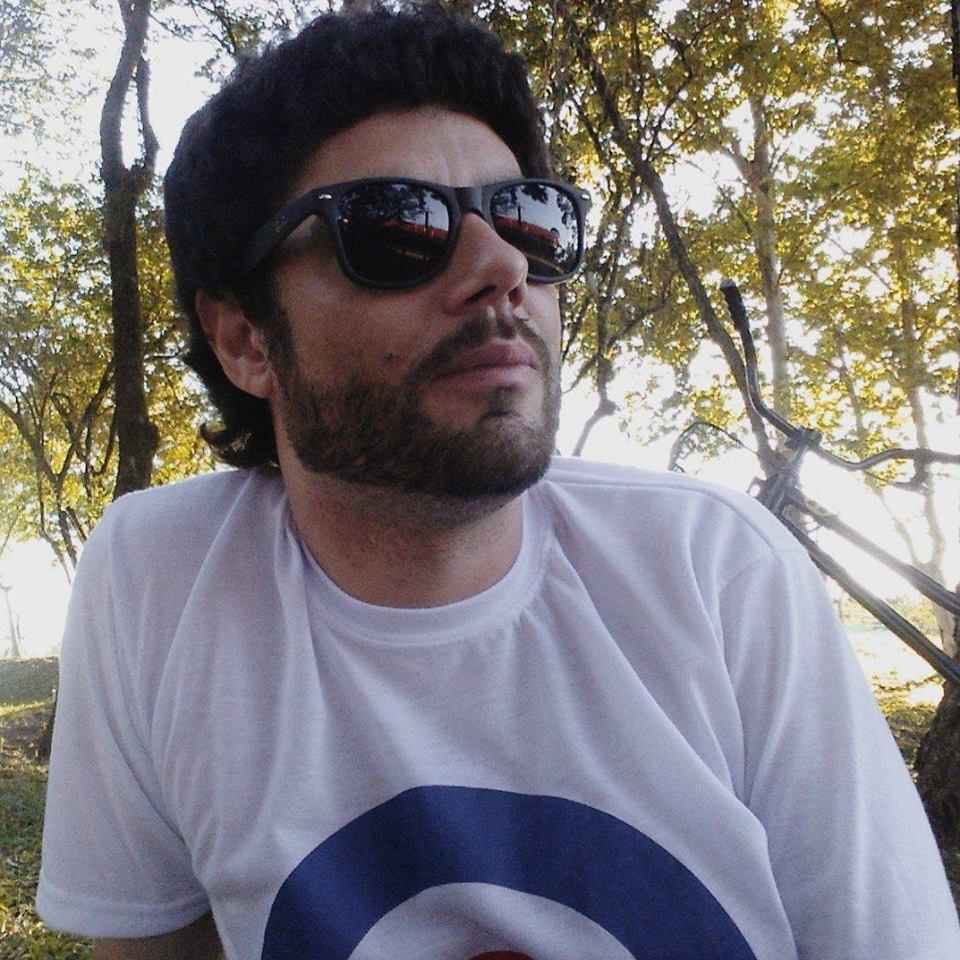

Diego Rafael Vieira
Estagiário no departamento de tecnologia da informação na PREFEITURA MUNICIPAL DE FELIZ
São Sebastião do Caí, Rio Grande do Sul, Brasil
Relacionamento sério com Monica Kunh Caceles
FORMAÇÃO
- Curso Técnico em Informática. Colégio Luterano Concórdia, concluído em 2015.
- Cursando o Superior de Tecnologia em Análise e Desenvolvimento de Sistemas.
QUALIFICAÇÕES E ATIVIDADES COMPLEMENTARES
- Inglês básico.
- Participação na Semana de Informática, Colégio Luterano Concórdia,2013/2014/2015.
- Participação na Semana Acadêmica dos Cursos Técnicos, Subsequentes e Tecnológicos,IFRS Campus Feliz, 2017/2018.
- Participação na 6ª Mostra Técnica como bolsista de pesquisa pelo Projeto Estação Meteorológica de Baixo Custo, IFRS Campus Feliz, 2017.
- Participação na Maratona de Programação do IFRS – Campus Feliz, 2017/2018.
INFORMAÇÕES ADICIONAIS
- No Curso Técnico em Informática, foram cursadas disciplinas na área de desenvolvimento de software (C#, Framework.NET,ASP.NET,MVC.NET, Visual Studio e banco de dados SQL).
- Durante o Curso de Análise e Desenvolvimento de Sistemas, cursei Programação e tive contato
com o desenvolvimento em Python e Java (IDE Eclipse). Também tive contato com Banco de Dados nos sistemas de gerenciamentos: PostgreSQL, MySQL e phpMyAdmin.
- Conhecimento em montagem, manutenção, configuração de computadores e redes.